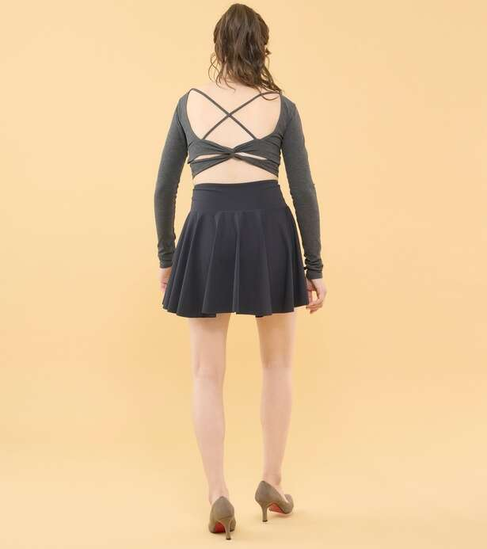
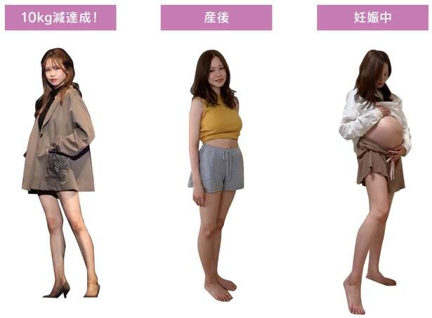
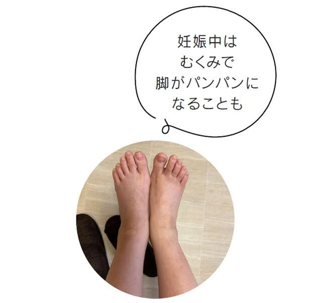

“一种神奇的步行饮食，可以帮助你自动减肥，并让你在余生中不再增加体重。” (Kanape/KADOKAWA) 第 1 部分 [共 7 部分]
步行教练卡纳佩（Kanape）通过SNS分享正确的步行方法，并以“步行让自己年轻10岁”为座右铭。她的步行前后视频发布在互联网（Instagram）上，引发了诸如“她看起来像老太婆和20多岁的女孩！”等评论，引起了巨大反响，观看次数超过800万次。她的书“一种神奇的步行饮食，可以帮助你自动减肥，并让你在余生中不再增加体重。”（KADOKAWA）是一本充满智慧的书，讲述了如何通过对步行方式做出微小的改变来获得不衰老的身体。为什么不模仿 Kanape 采取更轻松的步骤呢？
*本文摘自 Kanape 的书《神奇的步行饮食，将帮助您自行减肥，并让您终生不再增加体重。》
事实上，只有不到10%的人能正确行走！
经常看到驼背和小步幅的样子
每天，当我看着街上经过的人时，我发现有很多人没有意识到自己的走路方式是错误的。
大多数人走路时都会采取驼背、驼背或萎靡的状态。驼背走路的人很多，还有乍一看姿势很好，但背却弓起来的人。我的印象是，只有不到10%的人能以正确的姿势正确行走。。
还有，有很多人其实很瘦，但是因为走路的方式，导致他们看起来很胖或者毫无光泽。
弯曲的姿势或走路方式可能会让你感觉舒服，但实际上会给你的身体带来压力。如果继续这样走路，骨盆就会扭曲，该用的肌肉却没有得到利用而变弱，双腿也会变粗，形成恶性循环。
由于不良姿势和胯部腿，我看起来很老。
向前走会让你的背部和臀部看起来更大

另外，如果你从小就习惯以不良姿势走路，那么当你到了50岁或60岁时，肌肉力量开始下降，就很难保持正确的姿势。
如果走路不好的话，会有很多坏处。
反之亦然，掌握正确的姿势和走路方式，就能将身体支撑直。。然后，你的身体就不会有不必要的压力，所以你的身体会感觉更真正意义上的放松，你会看起来更精致。
产后步行成功减重10斤！

自从学会走路后，我长高了2厘米，达到159厘米，体重一直保持在43-44公斤。然而怀孕后，我体重增加了11公斤，达到了54公斤。
怀孕期间，不断被告知我的双腿状态很好，可能是因为我每天都很注意自己的走路方式和走路方式。然而，生完孩子后，我一直待在家里，不走路，所以四个月后，我只瘦了6公斤，肚子胀了，腿也粗了。
如果再这样下去就糟糕了！产后5个月，我开始推着婴儿车遛孩子，目标是每天走5000步。
这里重要的不仅仅是走路，还有你如何走路。
●良好的姿势和抬起的眼睛
●引起胃病
●对臀部施加压力
●脚跟落地
- 用后脚掌踢离地面
●迈出大步！
抱着这样的心态继续走下去，一个月后我的体重就增加到了44公斤。一口气瘦了4斤，恢复到产前体重了！我下垂的腹部和大腿变得越来越健美，我又回到了产前的体型。

产后，骨盆会变得不稳定，但通过收紧腹部并对臀部施加压力，内部肌肉会得到强化，起到“自我骨盆带”的作用，收紧松弛的骨盆区域。医生建议在怀孕期间散步，但也强烈建议在产后散步。
除了节食之外，散步还能让你精神焕发，让你的孩子有机会沐浴在新鲜空气中。产后想要恢复身材好难！如果您担心这一点，请注意走路方式并去散步。